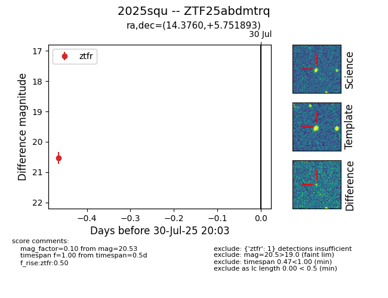

Target 2025squ at 2025-07-30 20:03, see:
FINK: fink-portal.org/2025squ
Lasair: lasair-ztf.lsst.ac.uk/objects/2025squ
ALeRCE: alerce.online/object/2025squ
TNS: wis-tns.org/object/2025squ
YSE: ziggy.ucolick.org/yse/transient_detail/2025squ
alt names
ZTF25abdmtrq (ztf,fink)
2025squ (tns,yse)
coordinates:
equatorial (ra, dec) = (14.3760,+5.75189)
galactic (l, b) = (125.7096,-57.08714)
photometry
last ztfr=20.53
1 ztfr detections
